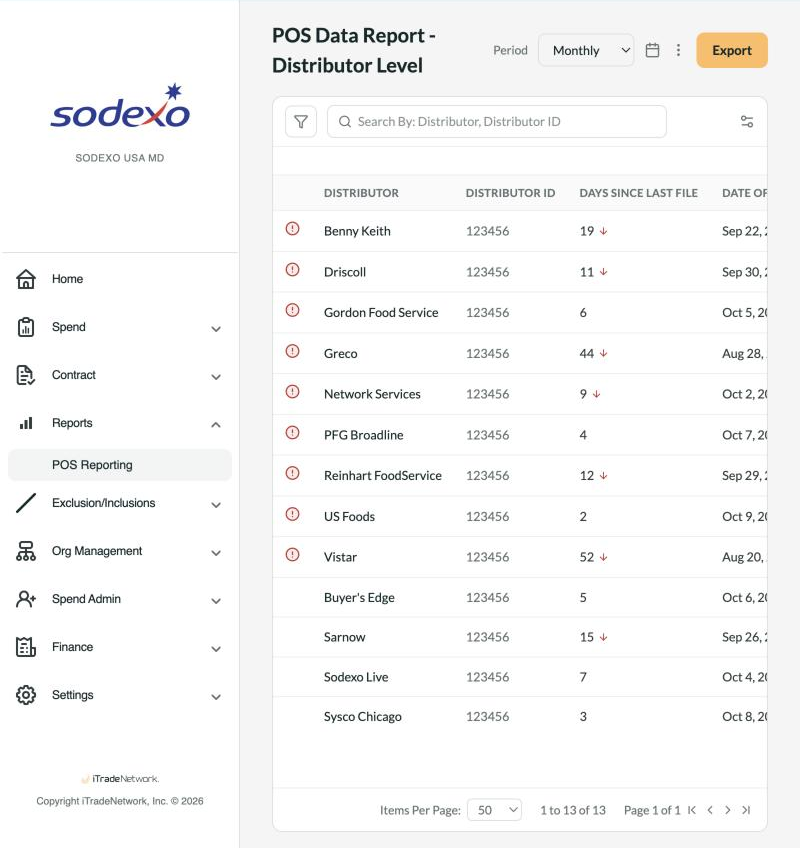
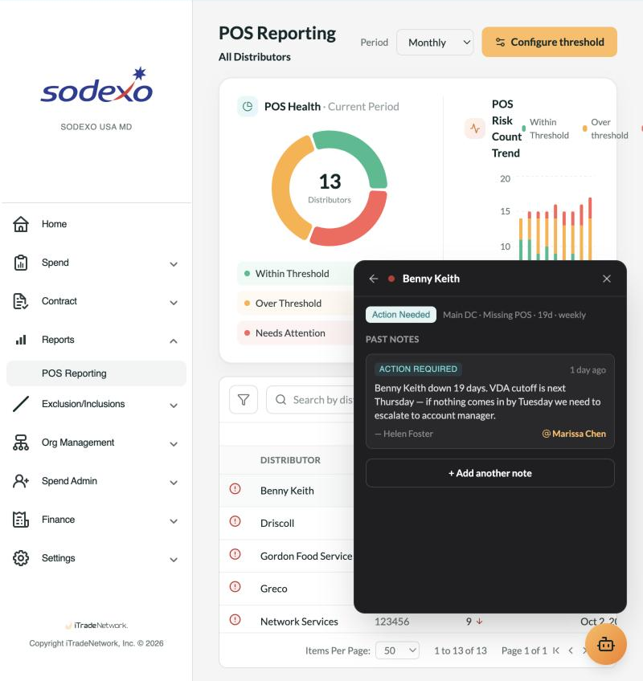
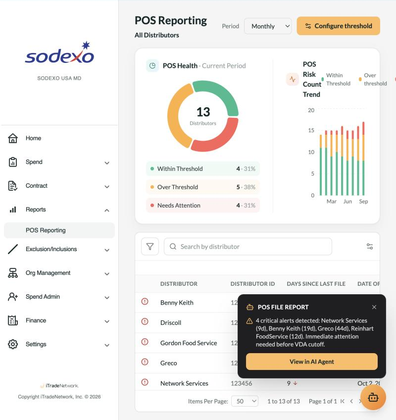

AI Design · Experimental · B2B SaaS
Turning a report into a co-pilot
How a client ask for "just a report" became a case for AI-assisted triage — followed end-to-end into a clickable prototype.
The Spark
It started as a request for a report
Sodexo relied on a legacy third-party tool, provided through iTradeNetwork, to confirm that distributor POS files were arriving correctly. That tool was being sunset and no longer worked reliably — leaving the client with no way to verify incoming files at all.
This wasn't a cosmetic gap. If a distributor's file doesn't reconcile with what's expected, the invoice built on it is wrong.
Engineering and PM's first instinct, working toward a minimal viable replacement, was to simply expose the underlying data as a report. It made sense — it was the fastest thing to ship. But that instinct undersold the actual problem.
A raw report only protects the business if someone reads it every day and correctly judges what's wrong from a table of numbers. For a non-technical reviewer, that's not a realistic expectation — and the first demo confirmed it. The client responded well to each incremental improvement we showed them, but kept surfacing the same hesitation: they needed to see that something was wrong, not infer it from raw figures. That gap — between "the data exists" and "someone trusts it enough to act on it" — is where the AI idea came from.
User Journey
A day in the life of catching this manually
Before AI was anywhere near the conversation, I mapped what the job actually looked like for the people doing it today — ops and finance reviewers checking dozens of distributor feeds every morning, with nothing but a table between them and a billing mistake.
Every morning
Open the report, start scanning
No flags, no severity — just rows of names. The only way to notice a problem is to spot a number that looks too big.
Spot something off
Decide if it actually matters
Nine days late might be routine for a weekly vendor, or a real problem for a daily one. That context lives in memory, not the report.
Go digging
Leave the report for context
Check cadence, check if it's already flagged, message a teammate, check the VDA calendar separately. Nothing's in one place.
Decide & act — maybe
Escalate, or let it ride
With no running history, every day restarts the judgment call from zero — usually under time pressure, right before a cutoff.
None of this is a willpower problem. It's that the system hands people a spreadsheet and expects judgment it never helps them form. That's the exact gap the AI layer needed to close.
Two Pitches
The plain report pitch vs. the AI-assisted pitch
I didn't want this comparison to stay theoretical, so I built both flows all the way to a clickable prototype — same data, same table, two very different experiences of using it.
- Every distributor shown with equal weight — no severity signal
- Reviewer manually compares against the last period by eye
- Context lives in memory, email, or a side spreadsheet
- First action is always "read the whole table"
- Critical distributors surfaced before the report is even opened
- Ask a plain question, get the specific record back
- States the threshold and exactly how far over or under it
- One click to the exact evidence, ready to export
There was a middle step too, between these two. Before AI, I tried color-coded flags and flexible period comparison — any period against any other, not just the prior one. It tested better, but the hesitation never fully went away: people could now see a flag, but still had to leave the screen to understand what to do about it. That's what pushed the pitch the rest of the way to an AI layer.

A plain data report. Nothing visually distinguishes a 2-day delay from a 52-day one — every row asks for the same attention.

The same data, assisted. A flagged row opens straight into status, notes, and context — the evidence a reviewer needs, already assembled.
Scoping the AI
Four jobs for the AI — and nothing more
It would have been easy to let the AI scope creep — auto-resolving alerts, drafting distributor emails, predicting future delays. I deliberately minimized it to four capabilities: enough to close the trust gap without overreaching on a first release.
Surface what's critical
Automatically, before anyone opens the report — the way the alert below appears the moment the dashboard loads.
Let the user ask
Type a question, retrieve what's wrong with a specific record — no query language or filter panel required.
Explain against threshold
State plainly whether a value is above or below the configured line, and by how much — not just a red dot.
Jump to the evidence
Take the user directly to the exact record, in a state ready to print or export for the distributor conversation.

Capability 01 in practice: critical alerts surfaced automatically, before a reviewer has scanned a single row.
This scope only got set after internal alignment — Engineering, PM, and our Director all had to agree on the efficiency case before it went anywhere near the client. When we did show it, the client confirmed it was exactly what they needed.
The Prototype
A working prototype you can click through
Everything above is built, not just mocked up. A toggle in the running prototype switches between the plain-report version and the AI-enhanced version, so the comparison is something you can feel, not just read about.
Open the clickable prototype
Use the AI-Enhanced / MVP (Original) switch at the top to compare both pitches live.
Launch prototype →Best viewed on desktop — it's a full dashboard prototype, not a mobile view.
Interested in working together?
I'm open to senior product design roles in B2B SaaS, enterprise tools, and complex data-heavy domains.